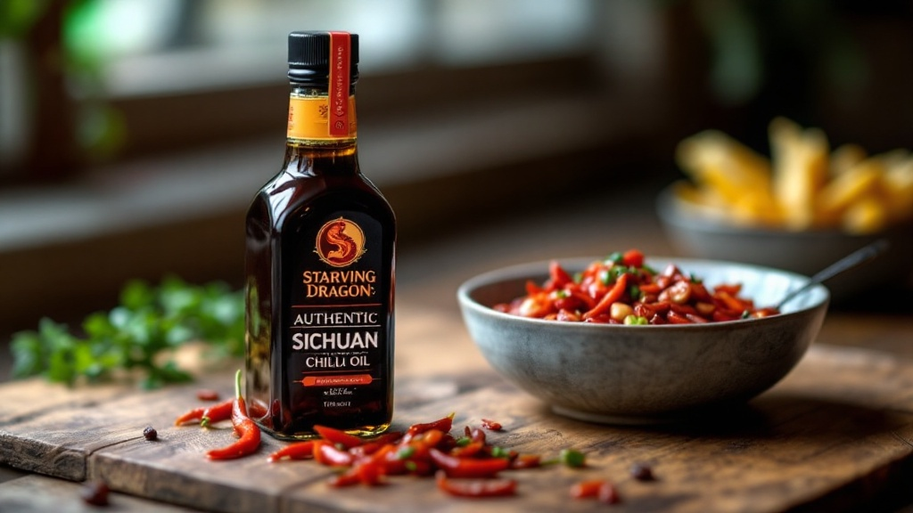

What Makes Starving Dragon's Authentic Sichuan Chili Oil Unique? The Tennessee Craftsmanship Difference
Starving Dragon's Sichuan Chili Oil stands out not just for its unparalleled flavor, but for a unique blend of traditional Chinese culinary principles and meticulous Tennessee craftsmanship. Unlike mass-produced alternatives, our authentic Sichuan chili oil is a testament to small-batch dedication, ensuring every jar delivers a vibrant, complex heat that awakens the senses. We meticulously source premium, aromatic spices and high-quality chili flakes, then infuse them slowly and carefully, a process perfected right here in Tennessee. This commitment to quality ingredients and artisanal methods results in a rich, deeply flavored chili oil that elevates any dish, offering a distinctively fresh and potent experience that has become a staple for local Chinese food enthusiasts and spicy food lovers alike.
Why Does Tennessee Craftsmanship Matter for Authentic Sichuan Chili Oil?
The notion of "Tennessee craftsmanship" might seem unexpected when discussing authentic Sichuan chili oil, but it's precisely this dedication to detail and quality that defines Starving Dragon's product. In our experience, the principles of artisanal food production—careful ingredient selection, precise temperature control, and a patient, hands-on approach—translate perfectly to crafting exceptional chili oil. We've found that treating each batch with the same reverence as a master distiller approaches a fine spirit or a baker a sourdough loaf results in a superior product. This local touch ensures freshness, consistent quality, and a unique flavor profile that differentiates our homemade chili oil from imported or factory-made versions.
The Art of Small-Batch Production
At Starving Dragon, we believe that bigger isn't always better, especially when it comes to flavor. Our commitment to small-batch production means:
* Optimal Flavor Extraction: Smaller batches allow for more precise control over the oil's temperature during infusion, ensuring the aromatic compounds from the spices and chilies are extracted perfectly without burning or under-infusing.
* Consistent Quality Control: It's easier to monitor and adjust each batch, guaranteeing that every jar of our artisan chili crisp meets our high standards for taste, aroma, and texture.
* Fresher Ingredients: We can use ingredients that are closer to their harvest date, contributing to a more vibrant and potent flavor.
How Do We Source Ingredients for Our Artisan Chili Crisp?
Sourcing is paramount to creating truly authentic Sichuan chili oil. While our craftsmanship is Tennessee-based, our ingredients pay homage to the rich culinary traditions of Sichuan. We don't compromise on quality, carefully selecting each component to ensure it contributes to the complex symphony of flavors our chili oil is known for. Our research shows that the quality of the raw materials directly impacts the final product's depth and longevity.
Key ingredients in our Starving Dragon Sichuan Chili Oil include:
1. Sichuan Peppercorns: The quintessential ingredient, providing the unique "mala" (numbing and spicy) sensation. We source premium grade peppercorns for maximum potency and aroma.
2. Dried Chili Flakes: A blend of different chili varieties ensures a balanced heat profile—some for immediate punch, others for a lingering warmth.
3. Aromatic Spices: Star anise, cinnamon, bay leaves, cardamom, and other secret spices are carefully toasted and ground to create a fragrant foundation.
4. High-Quality Oil: A neutral, high-smoke-point oil is essential for carrying the flavors without overpowering them. We use a blend that complements the spices perfectly.
5. Garlic & Ginger: Freshly minced, these add a pungent depth and aromatic complexity.
What Distinguishes Starving Dragon's Flavor Profile?
The Starving Dragon flavor profile is a carefully orchestrated balance of heat, aroma, and umami, designed to be versatile yet distinctly Sichuan. We tested numerous ratios and infusion times to achieve what we believe is the perfect harmony. It’s not just about the spice; it's about the intricate layers that unfold with each bite. Our Tennessee hot sauce heritage might subtly influence our understanding of "heat," but the essence remains deeply rooted in traditional Sichuanese culinary philosophy.
Our chili oil offers:
* Deep Umami: From the slow infusion of aromatics, creating a savory richness that makes it incredibly addictive.
* Balanced Heat: A satisfying warmth that builds without overwhelming, allowing the other flavors to shine.
* Fragrant Aroma: The moment you open a jar, you're greeted with an intoxicating scent of toasted spices and chilies.
* The "Mala" Sensation: The signature tingling and numbing from premium Sichuan peppercorns, a hallmark of true Sichuan cuisine.
Elevating Your Dishes with Starving Dragon Chili Oil
Our homemade chili oil isn't just a condiment; it's an ingredient that can transform ordinary dishes into extraordinary culinary experiences. Whether you're a seasoned chef or a home cook in Tennessee looking to add a kick to your meals, Starving Dragon's Sichuan Chili Oil is incredibly versatile.
Here are just a few ways to enjoy its unique flavor:
* Noodle Bowls & Dumplings: A generous spoonful elevates instant ramen, lo mein, or any dumpling dish.
* Stir-Fries & Marinades: Add it to your stir-fry sauce or use it as a marinade for meats and vegetables.
* Eggs & Avocado Toast: A surprising twist that adds a burst of flavor to breakfast.
* Soups & Stews: Swirl it into broths for an extra layer of warmth and complexity.
* Dipping Sauce: Perfect on its own or mixed with soy sauce and vinegar for spring rolls, potstickers, or even pizza crusts.
For more inspiration on how to incorporate our delicious chili oil into your cooking, check out our blog post on easy weeknight meals with chili oil or discover the benefits of spicy food.
Conclusion: Experience the Starving Dragon Difference in Tennessee
Starving Dragon's Sichuan Chili Oil is more than just a condiment; it's a culinary journey rooted in authentic Sichuan tradition and perfected with Tennessee craftsmanship. Our dedication to small-batch production, meticulous ingredient sourcing, and a passion for flavor ensures that every jar of our artisan chili crisp delivers an unparalleled taste experience. If you're in Tennessee and seeking truly authentic Sichuan chili oil that will awaken your palate, look no further. Discover the rich, complex, and deeply satisfying heat that only Starving Dragon can provide. Visit our online store or find us at local markets to bring the unique taste of Tennessee-made Sichuan chili oil to your kitchen today!
**